Тир Лист легендарок в Brawl Stars
На данный момент в игре 10 легендарных персонажей, а также 1 новый легендарный персонаж выйдет в Июне и это хороший повод для того чтобы узнать какой из них самый Сильный
Я расставлю всех персонажей от худшего к лучшему и расскажу о них
11.Честер
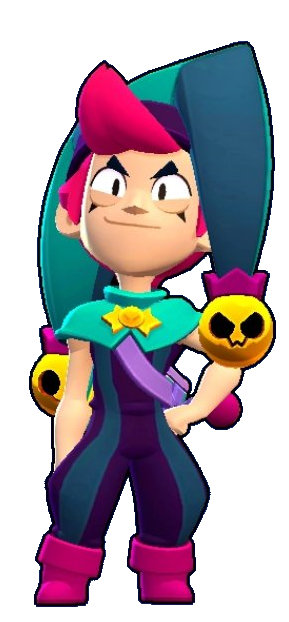
Честер работает шутом в магазине сладостей на территории «Конфетной Страны». Его атака — бубенчики, которые он кидает по очерёдности: сначала 1, потом 2, потом 3. А вот его Супер... к сожалению, или к счастью, невозможно предсказать. Это может быть прямая оглушающая атака, замедление с небольшим уроном по области, "конфетная бомба", восстановление собственного здоровья или конус отравленного газа. Звёздная сила «Бубенцы» увеличивает максимальное количество выбрасываемых бубенчиков с 3 до 4, а «Подсказка» позволит узнать следующий Супер до его полной зарядки. Гаджет «Шулер» позволит случайным образом изменить Супер, а «Желейные бобы» дают короткое улучшение либо в скорости, либо в уроне, либо в перезарядке, либо в восстановлении. Короче говоря, самый настоящий боец-загадка.
Оказался на последнем месте из-за того, что очень рандомный персонаж и это очень мешает, плюс 3 из 5 его ульт часто бесполезные.Единственный его плюс-это урон с пассивкой, но вблизи он проигрывает другим танкам
10.Мег
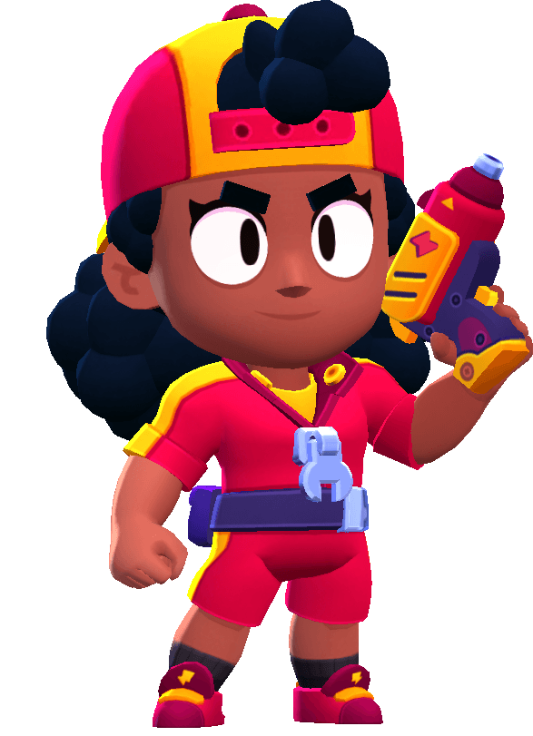
Мэг начинает бой в меха-костюме, в котором она имеет средний запас здоровья, средний урон и высокую дальность атаки. Супер в меха-режиме имеет низкую дальность и высокий урон. После уничтожения мехи Мэг возвращается в свой стандартный режим, в котором у неё низкий урон и низкий запас здоровья, но при этом высокая скорость и высокая дальность атаки, а Супером она может вновь превратиться в меху. После уничтожения мехи, если у Мэг есть Звёздная сила «Силовое поле», то у неё появляется щит на 10 секунд, а если есть Звёздная сила «Тяжёлый металл», то меха взрывается, нанося урон. Её первый гаджет восстанавливает здоровье при нахождении в меха-костюме в течение 5 секунд, а второй позволяет ей поставить на землю ящик с инструментами, который будет ускорять перезарядку всех, кто находится в радиусе его действия.
Мег имее большое количество хп, но из-за маленького урона она очень слабый перс и не может конкурировать с остальными
9.Сенди
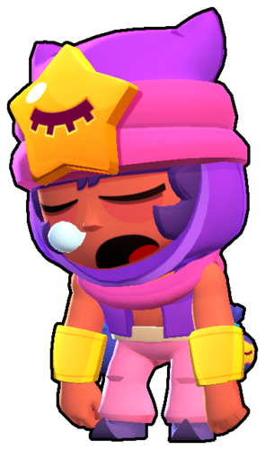
Сэнди имеет среднее здоровье, высокую скорость передвижения и средне-низкий урон. Одеждой и внешностью он похож на Тару и Джина. Его форма атаки — небольшой конус. Ею он кидает в противников колючий гравий, что даёт ему возможность наносить урон неограниченному количеству бойцов. Его Супер позволяет своим союзникам и ему быть невидимыми в зоне песчаной бури, которую он вызывает на 9 секунд. Его первый гаджет «Снотворное» восстанавливает полное здоровье спустя две секунды сна (задержки), при использовании не может передвигаться и атаковать. А со вторым гаджетом Сэнди оглушает врагов на 1 секунду (или до нанесения первого урона). Со Звёздной силой «Вредный песок» Супер наносит 100 урона в секунду врагам, а с «Целебный песок» наоборот, восстанавливает 300 здоровья в секунду товарищам по команде и себе.
Из-за маленького урона и не очень большого количества хп, сенди проигрывает многим другим бойцам 1 на 1 и способен приносить пользу только с командой
8.Вольт
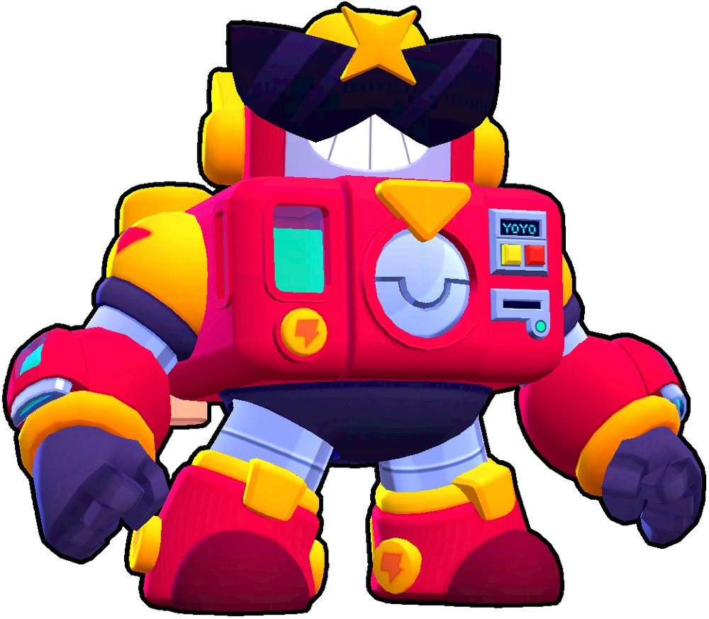
Вольт имеет средне-низкое здоровье, низкую скорость передвижения и средне-низкую перезарядку. Его атака — энергетический заряд, который при соприкосновении с противником разделяется на два поменьше. После каждого Супера он становится всё сильнее (повышает его скорость, потом дальность, а потом и количество мини-разрядов). С помощью первого гаджета «Скачок напряжения» Вольт временно повышает свой уровень на 1 выше, а с помощью «Силового щита» он ненадолго получает броню, которая поглощает урон и преобразует его в три заряженных боеприпаса. С помощью Звёздной силы «По максимуму!» снаряд атаки разделяется при соприкосновении с препятствиями, а с «Заморозкой» Вольт после использования Супера сохраняет улучшение 2 уровня до конца боя.
Вольт является очень бесячим, так как его ульта отталкивает и на какое-то время не даёт атаковать,однако без этого вольт становиться слабым, а на открытых картах не может играться из-за маленькой дальности
7.Ворон
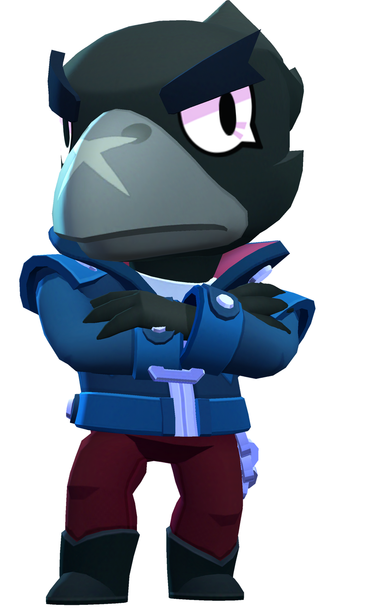
Ворон имеет средний урон, очень низкое здоровье, высокую скорость перезарядки и очень высокую скорость передвижения. Атакой Ворон бросает три ядовитых клинка, не давая восстанавливать здоровье противнику при помощи их яда. Его Супер — прыжок (взлёт), который оставляет за собой много кинжалов по круглой области (при взлёте и приземлении). Гаджет «Усилитель защиты» даёт Ворону щит на короткое время, а «Замедляющий токсин» может замедлять тех врагов, которых он отравил. Звёздная сила «Смертельный яд» уменьшает урон отравленных им врагов, а «Стервятник» позволяет Ворону наносить больше урона тем врагам, у которых осталось менее половины здоровья.
Ворон неплохой персонаж, но без ульты и гипера ему тяжело играться из-за маленького хп и урона.Однако его гаджет сильно помогает ему выжить, а с гипером в ограблении он один из лучших
6.Амбер
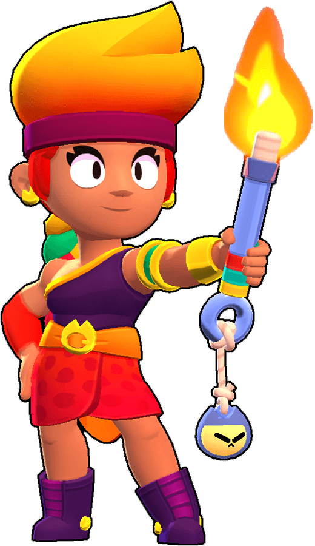
Её особенность — это эксклюзивная шкала атаки и непрерывный огонь. У неё нормальная скорость передвижения, средний запас здоровья, высокая дальность и высокий урон в секунду, а также очень долгая перезарядка всей шкалы. Супером Амбер кидает флягу горючего масла, которая при попадании на неё основной атакой воспламеняется и может как поджечь противников, так и сжечь кусты. С первой Звёздной силой Амбер получает возможность разлить два Супера на карте и возле любого из них копить на новый, а со второй она, будучи в огненной луже, перезаряжает атаку быстрее. С первым Гаджетом она ускоряется, разливая за собой Супер, а со вторым она распространяет вокруг себя три огненных шара, наносящих урон.
Отличный противотанковый персонаж и очень лёгкий в использовании. Её ульта может хорошо поджечь несколько врагов и нанести огромный урон.Из минусов у неё только маленькое хп.
5.Кит
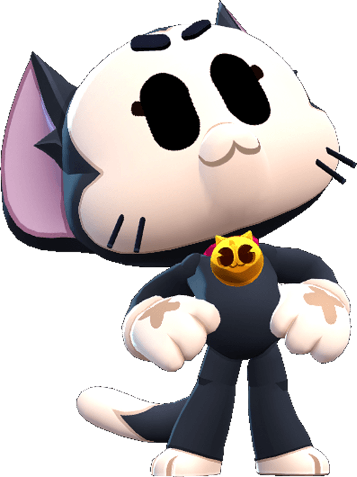
У Кита крайне малая дальность атаки и низкий уровень здоровья, а также урона, но Кит очень полезен благодаря своему Суперу: после прыжка на другого бойца у Кита увеличиваются все характеристики. В своей привычной форме Кит атакует, один раз быстро царапая врагов когтями (похоже на атаку Базза или Биби), а его особенность позволяет быстро заряжать Супер, с помощью которого Кит может использовать "метательную атаку" или наносить урон противнику, находясь на нём. При помощи своего первого гаджета Кит может становиться невидимым и незаметно подкрадываться к врагам, а второй гаджет позволяет быстро исцелить себя и своего союзника во время своего Супера. Первая звёздная сила очень полезна для карт Столкновения, так как она позволяет получать в 2 раза больше силы из кубиков усиления, а вторая звёздная сила просто увеличивает время действия Супера.
Кит-один из лучших персонажей в шд, об этом говорит одна из его пассивок, но он также может играться как сапорт в других режимах, его ульта ненадолго станит врагов, тем самым он и враг являются уязвимыми.
4.Драко
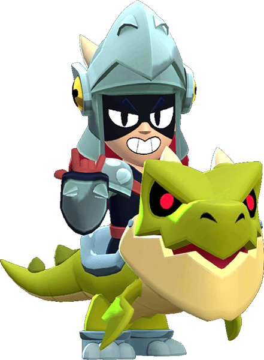
Драко ещё не вышел, но многие пророчат что он будет очень сильным из-за того что имеет способности многих персонажей, таких как Белль,Амбер,Пайпер,Булл
А ещё он хобихорсер
3.Корделиус
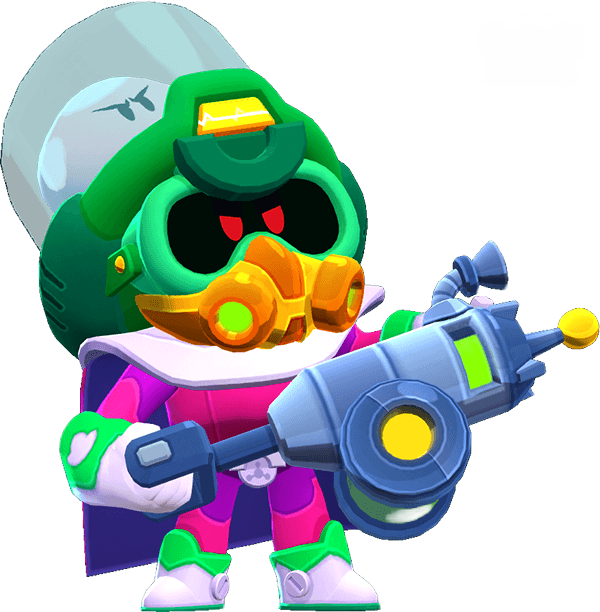
У Корделиуса среднее количество здоровья, высокий урон, очень быстрая скорость передвижения и очень быстрая перезарядка. Его особенность позволяет пассивно заряжать свой Супер, если в радиусе его действия находится противник. Корделиус атакует, стреляя двумя грибами из своей пушки. Для своего Супера он стреляет одним огромным грибом, который переносит его и врага в царство теней на некоторое время.
Имеет сломанный гаджет, интересную и сильную ульту, один из лучших гиперов, топ 1 перс в шд, но способен отлично играться в нокауте и броулболе, безусловно самый интересный легендарный перс
2.Спайк
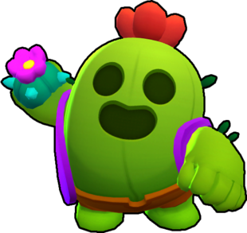
Спайк имеет низкое здоровье, нормальную скорость передвижения и высокий урон вблизи. Обычной атакой он стреляет на средне-высокую дистанцию, а выбрасывающиеся колючки её увеличивают. Супером Спайк кидает колючую бомбу, которая замедляет врагов и наносит им небольшой урон. С помощью первого гаджета он разбрасывает вокруг себя иглы, а с помощью второго гаджета Спайк ставит кактус, который при уничтожении исцеляет здоровье союзникам в определенной области. Первая Звёздная сила восстанавливает ему здоровье, когда он находится в области своего Супера, а от Второй колючки атаки Спайка закручиваются в полёте.
Спайк имеет очень большой урон вблизи, сильную и замедляющую ульту, он играется во всех режимах и из-за этого является самой популярной легендаркой, но проигрывает леону из-за маленького хп и среднего гипера.
1.Леон
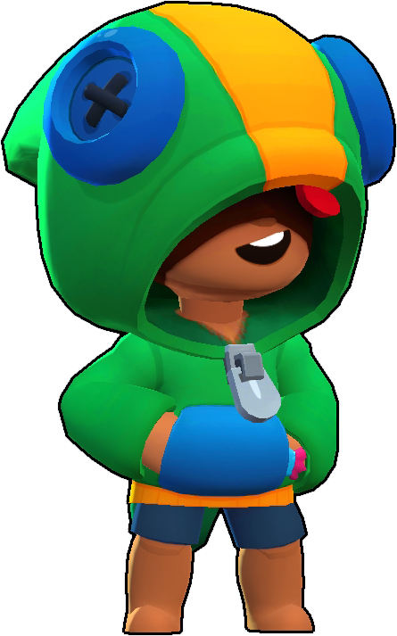
Леон имеет очень высокую скорость передвижения и низкое здоровье. Своей обычной атакой он бросает 4 лезвия на очень большую дистанцию. Урон варьируется в зависимости от того, как далеко летят его сюрикены (чем ближе цель, тем больше урон). Используя свой Супер, Леон становится невидимым для противников в течении 6 секунд. Один из его Гаджетов создаёт двойника, который бежит к ближайшему врагу, отвлекая его. Клон не может атаковать и ему наносится в два раза больше урона. Второй Гаджет Леона создаёт леденец, возле которого все игроки команды становятся невидимыми. Звёздная сила «След дыма» ускоряет его при Супере, а «Тайное лекарство» тоже при Супере Леону восстанавливает 1360 очков здоровья в секунду.
Очень сильный перс, благодаря геперзаряду контрит почти всех, имеет пассивку с которой можно жить в дыму и два неплохих гаджета.
Этот тир лист основан на моём мнении, и вы можете быть с ним несогласны.
Все жалобы пишите на почту, в WHUTSOPP и в TELEVIZOR.>
Их вы можете найти в разделе контакты